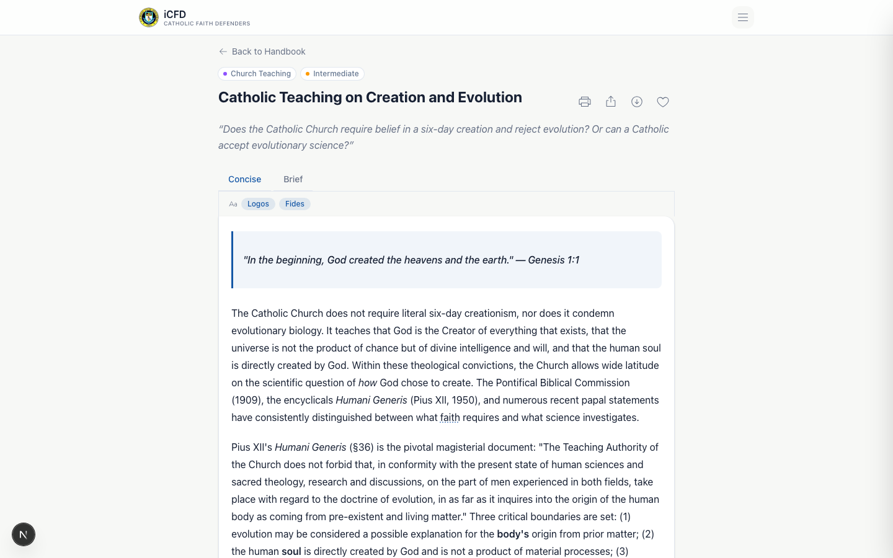
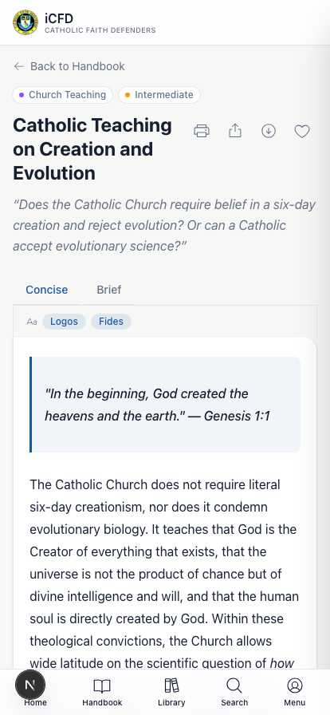
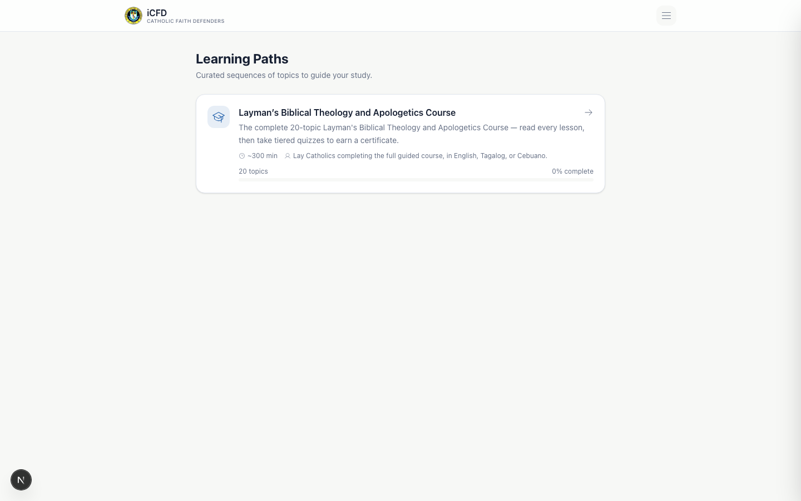
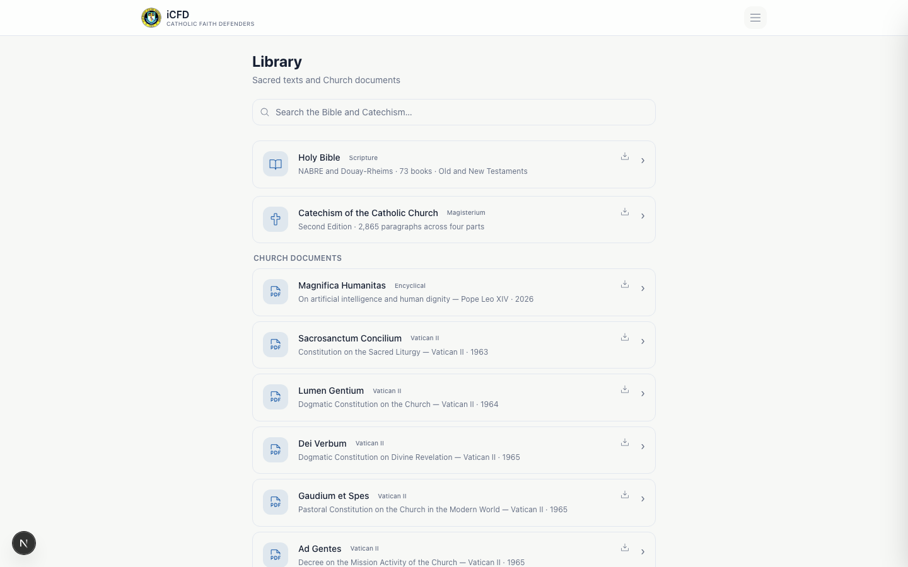

- Almost 17 years in software engineering and architecture
- Currently a Line Manager
- Experience building software systems and platforms
- Involved in CFD through a personal journey of rediscovering and defending the Catholic faith
There is already a tremendous amount of Catholic information online:
But information is often scattered across different sources.
My wife gave me a list of 12 topics she wanted to understand, and asked me to write explanations so she could study them.
Because Cebuano was difficult for her, I initially created the material in Tagalog and English.
That became the beginning of iCFD.
The goal evolved from simply providing answers to helping Catholics learn, practice, and defend the faith.
iCFD brings together:
Scripture · Catechism · Church Documents
Church Fathers · theological terminology
Structured learning · quizzes · certificates
The presenter will switch to the live application.

iCFD is built as a Progressive Web App (PWA) with real offline capability — service worker caching, installable icon set, offline content access.
Live demo:

The CFD Layman's Biblical Theology and Apologetics Course provides a structured formation framework with 20 themes/topics.


Greek → assembly, called-out ones → "Church"
Worship due to God alone
Veneration given to saints
"God-bearer" — title of Mary
"Full of grace" — Luke 1:28
The objective is to help the defender understand terminology behind theological arguments — not merely memorize conclusions.
The platform can support:
The objective is formation insight, not surveillance.
Content domains stored in the database: Topics · Bible · Catechism · Canon Law · GIRM · Church Documents · Church Fathers · Learning Paths · Quizzes · Certificates · Users · Analytics.
| Service | Current Plan | Cost |
|---|---|---|
| Vercel (hosting) | Free tier | ₱0 |
| Supabase (database, auth, storage) | Free tier | ₱0 |
| Domain | [INSERT CURRENT DOMAIN COST] | [INSERT ₱/year] |
| Other services | [INSERT IF ANY] | [INSERT ₱] |
| Total recurring | [INSERT ₱X] |
Database/storage limits · Bandwidth · Function limits
Growing users · Concurrent usage · Increasing traffic
Backup requirements · Monitoring · Availability
Larger content library · Advanced analytics
Additional organizational features
Everything below "Today" is described as a planned direction, not an existing feature.
It does not replace:
iCFD is a tool for formation and access to Catholic resources. It does not replace the teaching authority of the Church or formation provided by priests, catechists, and CFD leaders.
I would now like to open the floor for questions, recommendations, and guidance from the Board.